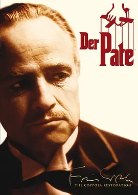

影视收藏
2024年11月22日
分类：个人收藏
下面是我看过的影视，去掉了一些我觉得不行的（当然精选电影里的不在这里，因为那边已经写过了这里就不用写了，更何况那边就是从这里挑出来的）。
电影
- 面纱（2006）
豆瓣：8.3，IMDb: 7.4 - 分手的决心（2022）
豆瓣：7.6，IMDb: 7.3 - 傲慢和偏见（2005）
豆瓣：8.7，IMDb: 7.8 - 美丽人生（1997）
豆瓣：9.5，IMDb: 8.6 - 肖申克的救赎（1994）
豆瓣：9.7，IMDb: 9.3 - 铁拳男人（2005）
豆瓣：8.8，IMDb: 8.0 - 黑客帝国（1999）
豆瓣：9.1，IMDb: 8.7 - 硅谷传奇（1999）
豆瓣：7.6，IMDb: 7.2 - 教父（1972）
豆瓣：9.3，IMDb: 9.2

- 教父2（）
豆瓣：，IMDb: - 闻香识女人（）
豆瓣：，IMDb: - 海上钢琴师（）
豆瓣：，IMDb: - 钢琴师（）
豆瓣：，IMDb: - 这个杀手不太冷（）
豆瓣：，IMDb: - 蝙蝠侠：黑暗骑士（）
豆瓣：，IMDb: - 蝴蝶效应（）
豆瓣：，IMDb: - 记忆碎片（）
豆瓣：，IMDb: - 穆赫兰道（）
豆瓣：，IMDb: - 彗星来的那一夜（）
豆瓣：，IMDb: - 闪灵（）
豆瓣：，IMDb: - 致命ID（）
豆瓣：，IMDb: - 看不见的客人（）
豆瓣：，IMDb: - 后窗（）
豆瓣：，IMDb: - 禁闭岛（）
豆瓣：，IMDb: - 恐怖游轮（）
豆瓣：，IMDb: - 寄生虫（）
豆瓣：，IMDb: - 恐怖直播（）
豆瓣：，IMDb: - 让子弹飞（）
豆瓣：，IMDb: - 利刃出鞘（）
豆瓣：，IMDb: - 沉默的羔羊（）
豆瓣：，IMDb: - 消失的爱人（）
豆瓣：，IMDb: - 调音师（）
豆瓣：，IMDb: - 黑暗面（）
豆瓣：，IMDb: - 浪潮（）
豆瓣：，IMDb: - 狩猎（）
豆瓣：，IMDb: - 非常嫌疑犯（）
豆瓣：，IMDb: - 杀人回忆（）
豆瓣：，IMDb: - 致幻魔术（）
豆瓣：，IMDb: - 万能钥匙（）
豆瓣：，IMDb: - 触不可及（）
豆瓣：，IMDb: - 超脱（）
豆瓣：，IMDb: - 楚门的世界（）
豆瓣：，IMDb: - 灵异第六感（）
豆瓣：，IMDb: - 我是谁：没有绝对安全的系统（）
豆瓣：，IMDb: - 心迷宫（）
豆瓣：，IMDb: - 正发生（）
豆瓣：，IMDb: - 海边的曼切斯特（）
豆瓣：，IMDb: - 爱在黎明破晓前（）
豆瓣：，IMDb: - 爱在日落黄昏时（）
豆瓣：，IMDb: - 社交网络（）
豆瓣：，IMDb: